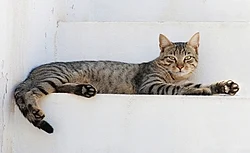
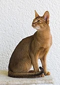
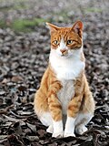
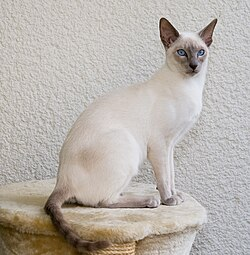
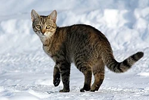
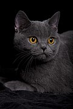

Cats are animals
The cat (Felis catus), also called domestic cat and house cat, is a small carnivorous mammal. It is an obligate carnivore, requiring a predominantly meat-based diet. Its retractable claws are adapted to killing small prey species such as mice and rats. It has a strong, flexible body, quick reflexes, and sharp teeth, and its night vision and sense of smell are well developed. It is a social species, but a solitary hunter and a crepuscular predator. Cat communication includes meowing, purring, trilling, hissing, growling, grunting, and body language. It can hear sounds too faint or too high in frequency for human ears, such as those made by small mammals. It secretes and perceives pheromones. Cat intelligence is evident in its ability to adapt, learn through observation, and solve problems. Female domestic cats can have kittens from spring to late autumn in temperate zones and throughout the year in equatorial regions, with litter sizes often ranging from two to five kittens.
The domestic cat is the only domesticated species of the family Felidae. Advances in archaeology and genetics have shown that the domestication of the cat started in the Near East around 7500 BCE. Today, the domestic cat occurs across the globe and is valued by humans for companionship and its ability to kill vermin. It is commonly kept as a pet, working cat, and pedigreed cat shown at cat fancy events. Out of the estimated 600 million domestic cats worldwide, 400 million reside in Asia, including 58 million in China. The United States leads in cat ownership with 73.8 million cats, followed by the United Kingdom with approximately 10.9 million cats. It also ranges freely as a feral cat, avoiding human contact. Pet abandonment contributes to increasing of the global feral cat population, which has driven the decline of bird, mammal, and reptile species. Population control includes spaying and neutering.
Cats can climb trees.